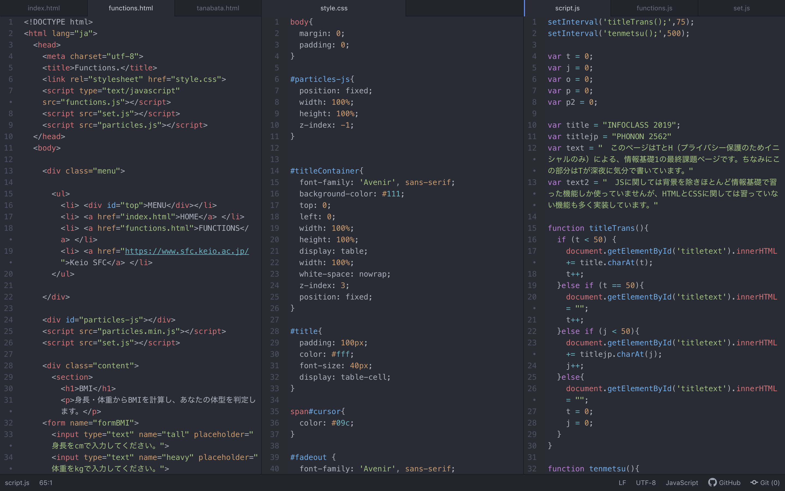

Hello.
System
このページは6つのHTMLファイル、3つのcssファイル、7つのJavaScriptファイルで構成されています。

一番最初のロック画面は、cssでposition:fixedを設定した縦横100%の要素です。今見えているこのページに覆いかぶさる形で読み込まれます。このページより上に出てくるように、z-indexで手前に配置しました。
また、鍵マークをクリックするとJavaScriptが作動するようになっています。JSでは要素を消すことはできますがフェードアウトさせることはできません。なので、ロック画面要素を囲っているdivタグにclassを割り当て、あとはcssのアニメーションで処理を行なっています。
ロック画面のタイピングしているようなあの文字もJavaScriptで記述しています。授業でやったsetIntervalとcharAtを利用しています。
背景はparticles.jsという外部のライブラリを参照しています。軽量なので扱いやすいです。